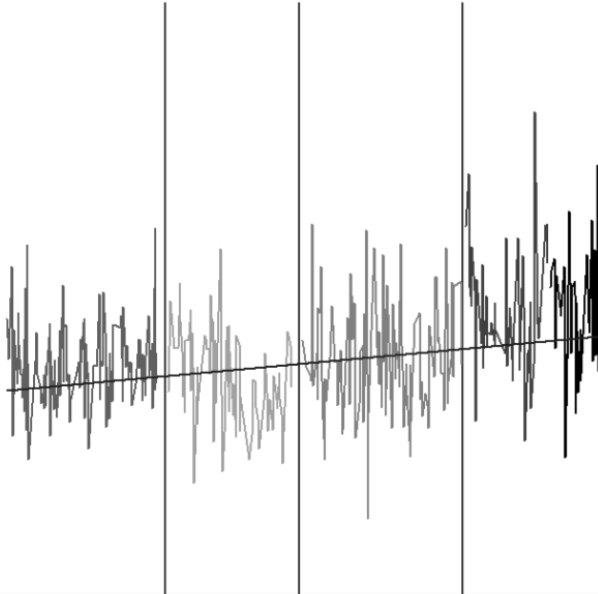

Incivility in Austrian parliamentary debates: A supervised sentiment analysis of parliamentary speeches

Venue. ECPR (2017)
Authors. Marcelo Jenny, Martin Haselmayer, Elena Rudkowsky, Matthias Wastian, Stefan Emrich, Michael Sedlmair
Materials.
PDF
Abstract. Incivility of political communication has become a major topic in public and scientific discourse (e.g. Herbst 2010; Berry and Sobieraj 2013), and it is often seen as a cause of increasing political polarization, lower electoral turnout and voter disaffection with politics and democracy in general (Jamieson 1992; Kahn and Kenny 1999; Mutz and Reeves 2005, Mutz 2007; Brooks and Geer 2007; Lau and Rovner 2009; Harcourt 2012). However, there is no agreement on the definition or measurement of incivility. Our paper presents an automated sentiment analysis to identify uncivil language and to measure the level of (in)civility in parliamentary speeches. Substantively, we study incivility in the Austrian national parliament during the last two decades (1996-2013) and explore some of the political, institutional and individual factors that affect the level of incivility shown in parliamentary debates. We check whether government/opposition status, the parliamentary role, the type of debate and closeness to the next election has an effect on the level of civility observed in parliament.